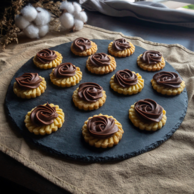

Nutella Tarts

Fragrant buttery biscuit topped with sweet and creamy nutella topping
Bake the tart a second time to fix the Nutella.
Ingredients
- 1/2 Cup or 115g of Unsalted Butter, Softened at Room Temperature
- 1 and 1/2 Cup or 180g of All-Purpose / Plain Flour (and extra for flouring the surface)
- 2 Tablespoon or 35g of Granulated White Sugar
- 2 Tablespoon or 20g of Milk Powder (Optional)
- 1 Egg Yolk
- 1/4 Tsp or 1.4g of Table Salt
- 1 Tsp or 5ml Vanilla Essence
- 300g of Nutella
Steps
-
Cream together softened butter and sugar until it is light and fluffy, about 2 minutes.
-
Then, add in salt, egg and vanilla before mixing well.
-
Sift the flour and milk powder.
-
Next, fold in the dry ingredients into the mixture containing the well-mixed butter, sugar and egg yolk.
-
Once completed, refrigerate the batter for 25 minutes. In the meantime, preheat the oven to 160 degrees C (or 325F).
-
Then, flour a clean surface and roll out the dough until about 0.5cm thickness.
-
Using a cookie cutter, cut out the dough and transfer to baking tray.
-
Bake for about 12min 45 to 13min 45s or until it is starting to brown on the edges.
-
Leave to cool for about 30 minutes.
-
Then, pipe your Nutella filling over the cookie. These filling will not expand.
-
Bake an additional 8-10 minutes at 140 degrees C. If it cracks or bubbles, lower the temperature to 120C – 130C.